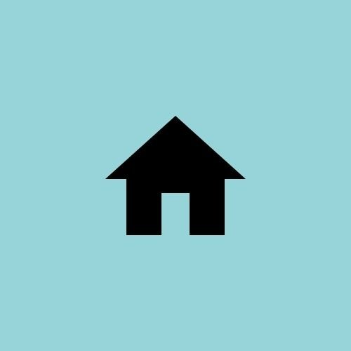

Bakefuel ®
About Bakefuel
History:
The story of the Bakefuel started more than 20 years ago when Ms.Diya Patel, a BCA graduate, changed the life of a college student with a few simple words, “Let’s open a sweet and salty shop.” The company launched its first branch in India in April 1990, and has been people's favourite since then.
It was Diya that gave college freshman the idea to open sweet and salty shop to help pay his tuition. Diya provided an initial investment of $1000, and a business partnership was being done.
The partners opened their first shop in mumbai, where they served fresh, affordable items. The popularity of the items and the brand continued to grow over the decades but one thing remained the same and that was their core values and principles:
- Always provide exceptional service to your valued guests.
- Provide the best quality menu items at a very affordable price.
- Never stop improving.
The Franchise:
By 2000, the duo owned and operated 5 cafe shops throughout India. Realizing they would not reach their 20 store goal in time, they began franchising, launching the BAKEFUEL brand into a period of remarkable growth which continues to this day. While serving as a great hangout spot for family and friends, Bakefuel also offers delivery and on-the-go pick up service to fulfil everyone's cravings and comfort.
Shiny Future:
Today, the BAKEFUEL brand is one of the india's largest cafe chain with more than 100 locations around India. We've become the leading choice for people seeking quick meals that the whole family can enjoy. From the beginning, Diya had a clear vision for the future of the BAKEFUEL. As we continue to grow, we are guided by her passion for delighting customers by serving delicious food items.
| 
xyz road, Anand, Gujarat |
0987654321,1234567890 |
bakefuel@gmail.com |
|
| Company | Services | Products | trust&taste | Contacts |